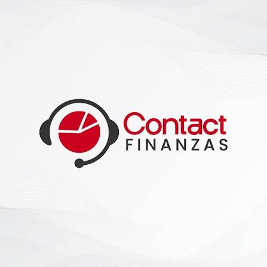

Nuestros inicios
Origen de la empresa y los primeros pasos de su trayectoria.
Por completar
Aula de formaciónFORMACIÓN EN COBRANZASBIENVENIDO A CONTACT FINANZAS
Explora nuestra historia y descubre cómo se desarrolla una gestión de cobranza.
EXPLORA EL MÓDULO
NUESTRA HISTORIA
Este espacio reunirá la historia de Contact Finanzas: sus inicios, su trayectoria y los valores que orientan al equipo.
El contenido se completará con la información suministrada por la empresa.
Origen de la empresa y los primeros pasos de su trayectoria.
Por completarMisión, visión y valores compartidos por nuestro equipo.
Por completarEl equipo, los servicios y la forma en que trabajamos hoy.
Por completarMÉTODO DE TRABAJO
Recorrido propuesto para capacitación.
Pendiente de validación por la empresa.
Revisa la información disponible del caso y el protocolo de atención antes de iniciar el contacto.
Confirma que cuentas con información actualizada y conoce las opciones autorizadas por la empresa.